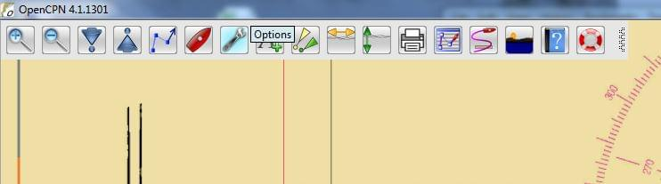
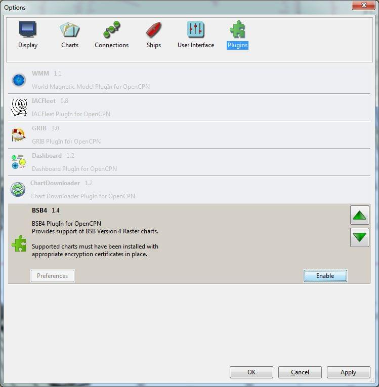
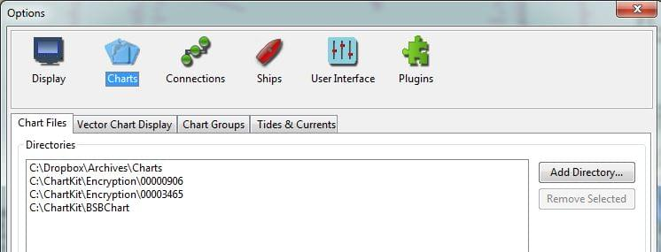

Provides support of BSB Version 4 Raster charts, a format used by many hydrographic authorities throughout the world. BSB4 charts are raster charts, manufactured according to a standard developed by MAPTEC. The BSB4 plug-in enables OpenCPN to open and read the encrypted charts correctly provided that the charts have been purchased, registered and the plugin is installed properly. Supported charts must have been installed with appropriate encryption certificates in place. This plug-in only works with Windows.
There are several sources of charts:
The chart installation procedure is independent of OpenCPN. At the time this plugin was first published the creator of the plugin posted on www.cruisersforum as follows:
It will be a binary-only DLL, looking just like all other PlugIns at run-time.
In summary, the plug-in will only work for registered charts on the computer where they were first installed and registered. The plug-in is NOT a means to obtain free charts.
The downloaded file is an installer which will place a DLL in the “plugins” folder of the OpenCPN installation. The installer will attempt to place it in the correct location but if your directory structure is “non-standard” the plug-in may not end up in the correct location. On a standard installation the plug-in folder will be C:\Program Files (x86)\OpenCPN\plugins\ If you have a non-standard installation then it will be up to you to ensure that the BSB4 plug-in (bsb4_pi.dll) appears in the correct folder - just copy it into the right location if it doesn't get there by itself.
Once the plug-in DLL is in the correct plug-ins folder it will appear in the options/plugins menu when you start OpenCPN. You will need to navigate to Options (the wrench menu item), select the plug-ins tab, find the BSB4 plug-in and click “enable” in order to use the plug-in.


With the plug-in successfully installed in the OpenCPN plug-ins directory and enabled there is one further step necessary to view your encrypted charts.

From the Options menu, select the Charts tab.
Then add the appropriate directory(ies) where your encryption certificates are located, followed by the directory(ies) where the encrypted charts are located.
The screenshot above is from a successful installation. Your directory structure will no doubt be completely different but the same principles apply.
In the example above, the non-encrypted charts are located on Dropbox.
Then there are two separate encryption directories followed by the directory which contains the encrypted charts.
To recap the process, the following are the steps necessary to install and use the BSB4 plug-in:
Typically if you follow all the steps the charts will immediately be visible at this point. On occasion however they will not immediately appear and you may need to exit the OpenCPN software, closing it completely and then reopening it. At that point the encrypted charts should be visible.